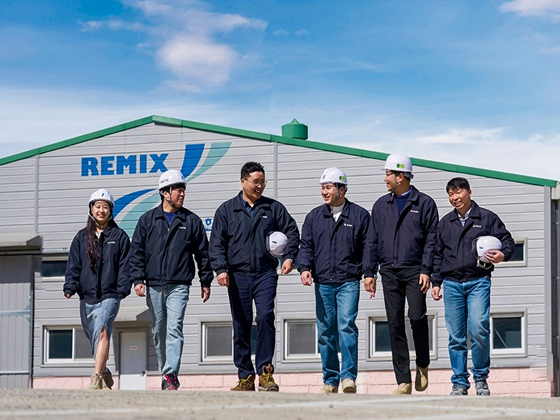

본문콘텐츠영역
GREEN VALUE FOR ALL
ESG 경영
한일시멘트는 기후위기 대응과 지속가능한 성장을 핵심 경영전략으로 삼고 있습니다. 탄소중립 로드맵 이행부터 임직원 안전보건까지, ESG 경영의 모든 순간을 투명하게 공개합니다.
OUR BUSINESS
사업소개
시멘트부터 레미콘, 레미탈까지 —
건설의 모든 과정을 책임지는 한일시멘트의
사업영역을 소개합니다.
RECRUIT
인재채용
생산현장부터 연구개발, 영업까지 —
한일시멘트는 다양한 직무에서 새로운 도전을
함께할 인재를 찾고 있습니다.
